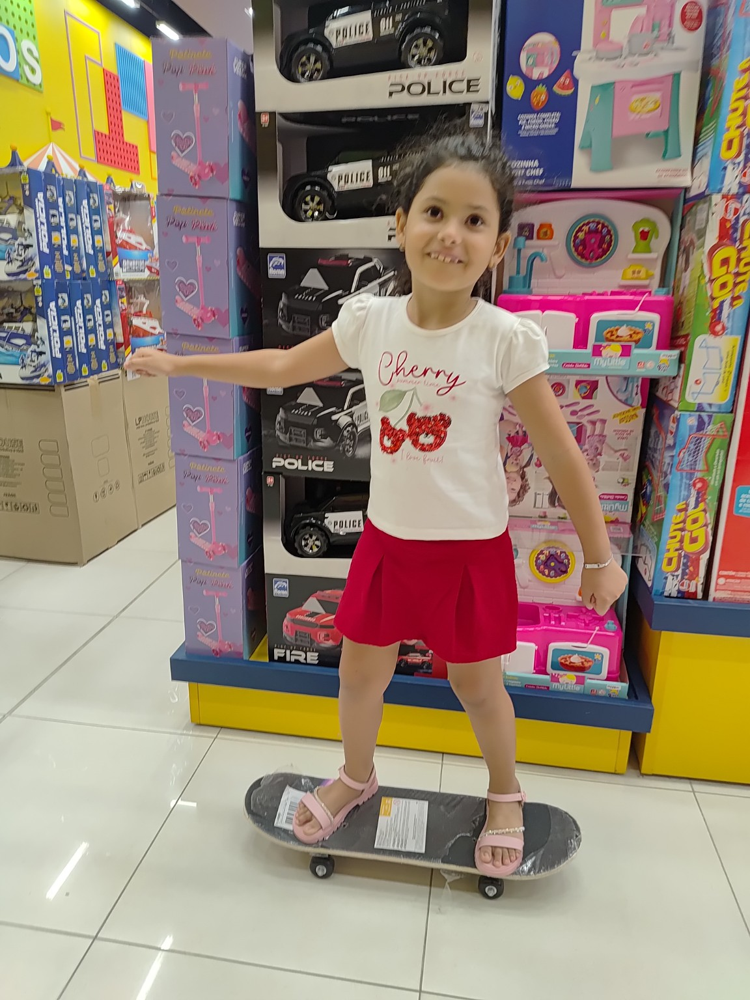
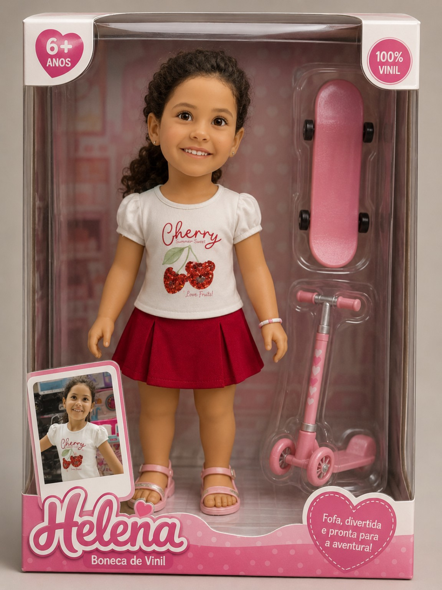
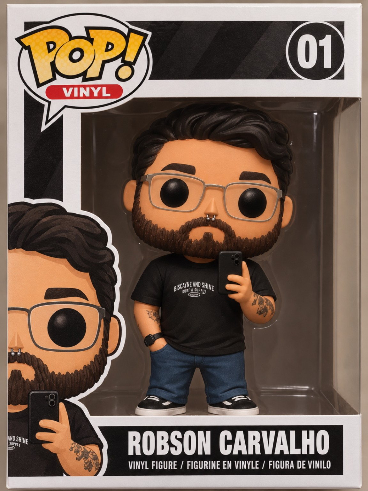
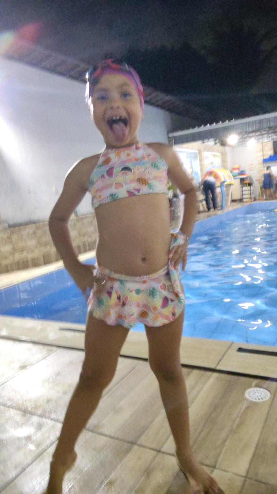
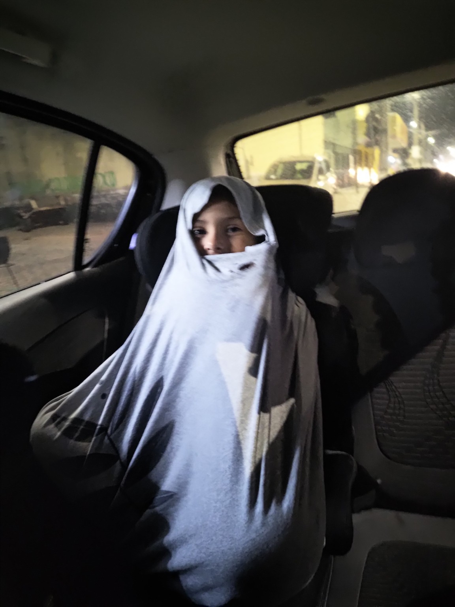

21 de Junho de 2023
Acordei de um cochilo, pensando que tô errado em me deixar esmorecer novamente, mesmo com a ciência de que é algo que não consigo controlar 100%. Tudo bem, tudo vai se encaixar de novo, coisas boas estão vindo, não posso me perder enquanto mal me achei.
Essas últimas semanas foram diferentes, tipo, baixei um app de relacionamentos, e sabe como é, né? Introvertido como eu sou, conhecer pessoas novas (eu sei, é uma redundância) nunca foi o meu forte. Enfim, aí comecei a conhecer algumas pessoas, mesmo que virtualmente, e isso has sido desafiador, pois em algum momento é necessário falar sobre mim, falar sobre o que faço da vida e etc. Nunca foi simples me descrever antigamente, hoje em dia então... Deve ser por isso que adotei a frase "a cabeça é ruim, mas o coração é bom", não diz muito, mas significa bastante. Pelo menos é o que eu acho.
Em contrapartida, vez ou outra o passado vem me assombrar sobre coisas que eu não estou conseguindo fazer, e me apavoro com todas as incertezas novamente. Meio que fico desconfortável com "não tô trabalhando", "precisei voltar pra casa dos meus pais", "me separei por causa do desgaste e estresse do dia a dia", "luto diariamente contra a ansiedade & depressão".
Seguir adiante parece que necessariamente preciso dar um passo pra trás. O problema disso é que em alguns dias eu tropeço e caio. Não vou mentir, há uma coisa interessante no fato de conhecer pessoas, elas te elogiam, te colocam pra cima, te beijam e te fazem se sentir desejado novamente. E eu sei que não devemos esperar/depender de terceiros para se sentir amado, bem consigo, mas vai, sem hipocrisia, é sempre bom receber elogios, carinho e etc.
Concluo que estar ocioso tem me deixado ansioso. Preciso voltar a ter foco em pedalar, em ler meus livros, quem sabe até fazer desenhos pra Helena pintar.
24 de Junho de 2023
São quase 2h da manhã, acordei e fiquei me revirando na cama tentando voltar a dormir, sem sucesso diga-se de passagem. O sono me abandonou e a vontade de escrever se fez presente.
Dessa vez estou dividindo a cama com meus filhos, Helena e Belchior, dois folgados onde cada um que se comporta como uma estrela do mar, com braços e pernas abertas como se o espaço da cama de casal não tivesse limites. Principalmente se pensar em como eu fico encolhido pra não atrapalhar os dois. E quem me conhece sabe que não sou nenhum pouco pequeno.
Um pensamento de felicidade estava me contagiando durante a madrugada, fosse ele por saber que teria minha filha a semana inteira comigo, fosse pelas lembranças da noite anterior. Penso em como é meio bobo dizer, mas A GENTE SE ACOSTUMA MUITO RÁPIDO COM O QUE É BOM, com o que nos faz bem.
Um abraço, um beijo, uma conversa que oscila desde temas sensíveis tratados em sessões de terapia até bobagens, cotidiano, sabe como é né? Não o bastante, perceber também um sorriso no canto do rosto indicando que possivelmente está tudo bem e que estava sendo ou muitíssimo agradável. Sei lá!
A noite anterior havia um roteiro que eu não segui a risca, mas não foi de caso pensado, apenas deixei acontecer, me permiti agir naturalmente, seja invadindo a cozinha e assumindo o fogão, seja me aproximando e beijando, surpreendendo consideravelmente a moça cheirosa que me cativou, e agora quase 3h20 da manhã me percebo já sentido um pouco da sua ausência, da sua gargalhada ao ouvir minhas besteiras, ou acompanhar um filme com delay, de ficar apenas abraçadinho sentindo sua pele macia.
Há tempos que não me sentia confortável com outra pessoa assim.
29 de Junho de 2023
Começo a escrever já com uma citação em mente que quero deixar em evidência: "a vida, meus amigos, é uma caixinha de surpresas", se você sacou a referência, ótimo, será mais fácil a compreensão, senão, por favor vá assistir a história de Josef Climber.
Com essa espetacular frase em mente, queria relembrar o quão envolvido eu estava com uma moça que conheci on-line, tivemos uma noite mega agradável, mas ela sumiu. Não atendia minhas ligações, ou não me respondia mais. Quando resolveu responder disse que minha "insistência" havia feito ela perder o interesse. Até onde eu sei, pra construir uma relação, independente do tipo, é necessário ter um pouco de comunicação, aprendi isso na marra, mas aprendi. Então a justificativa não fez muito sentido na minha cabeça e novamente eu tinha me decepcionado tentando seguir em frente.
Falei com uma amiga, perguntei o que eu tinha de errado, pois nada tava dando certo ou fazendo sentido. Ouvi que o problema não era eu, e que não deveria me cobrar pela ação dos outros. Difícil compreender ou assimilar isso com a ansiedade comendo o juízo, fazendo com que eu me sentisse não digno de me relacionar com alguém que tinha chamado tanto minha atenção.
Enfim, os apps de encontro não faziam mais parte do telefone, resolvi tentar de novo, embora o desgaste tenha feito com que eu achasse bobagem tentar de novo. Não podia estar mais errado... Sei lá que horas da noite do dia 28/06 apareceu uma moça que parecia interessante. Curti, recebi a notificação dela de volta. Match! A conversa começou devagar, não sabia o que dizer pra alguém com a camiseta de time de futebol.
Surpresa minha, ao falar do clima de chuva, Netflix e que só faltava alguém pra ficar agarradinho, ela concordou, e já perguntou se seria aqui ou lá na casa dela. Desenrolada demais! A conversa migrou pro WhatsApp, e aí meus amigos, o papo fluiu tão bem, tão natural que eu me esqueci completamente do porque eu estava triste. Não sou adepto de casualidades, e já fui chamado de emocionado uma vez, mas não precisei me segurar, foi tudo muito recíproco.
Conversamos até às 5h da manhã, por mensagens... Teve de tudo, o que não vem ao caso, e agora ansiamos pelo encontro, pra por em prática ao menos metade do que foi falado, tenha em mente que foram muitas horas de papo. Nem preciso dizer a respeito do meu sorriso bobo enquanto escrevo, né?
Foi um achado fantástico, quero muito encontrá-la, o coração chega a errar o compasso. Fantástico também foi uma coisa que ela mencionou hoje de tarde, que por minha causa ela havia voltado a escrever, e o simbolismo por trás desse gesto, fez com que eu me sentisse ainda mais encantado. Eu hein, nunca tinha me sentido assim.
Atualização: Deu ruim, era estelionatária, com direito a processo e tudo. #CILADA
1 de Agosto de 2023
Queria anunciar que depois de 03 longos meses desempregado, hoje eu consegui assinar os documentos de contrato de trabalho para uma empresa da qual eu nunca havia conseguido entrar. Finalmente! Foram várias etapas, exames, entrevistas, meu Deus, a todo momento eu achava que não ia conseguir, mas consegui. Preciso apenas me adaptar novamente a rotina de um lugar grande e que provavelmente me trará inúmeras cobranças. E dessa vez sem plano de saúde. Misericórdia senhor...
É isso, outro dia respondi com lágrimas no meu rosto que o ato de cometer suicídio não era covardia nem era coragem, mas sim desespero, a angústia de não ter a resposta ou solução pras coisas que deixaram deprimidos a esse ponto. Mas a minha meta de vida é ver minha filha crescer, ver minha filha bem, saudável. Se eu me entregasse ao desespero, não teria essa oportunidade. Porém ouvi que estava sendo muito rígido com ela, e nem preciso dizer o quanto isso me deprimiu.
Mas se precisar exemplificar, bom, tenta imaginar um cara com as minhas proporções andando pelo shopping depois de resolver umas coisas, com as lágrimas escorrendo só de pensar o quanto seria legal se meu pacotinho estivesse passeando ali comigo. Do quanto ela ia gostar de ver tal roupa, tal brinquedo... O coração apertou tanto, tanto que pedi em nome de tudo o que fosse sagrado pra que a mãe de Helena desse um abraço nela por mim.
Não quero e nem vou deixar a depressão me vencer, mas têm dias que é bem difícil. Aí vou ver desenho no meu tempo livre, algo que era pra me distrair, algo que seja leve e que não me faça pensar nos meus problemas, mas o que eu achei no lugar? Um anime muito bonitinho chamado Spy x Family, tipo, é a história de um espião chamado Twilight que de uma hora pra outra precisa formar uma família e enfrentar os desafios de ser espião e de ser responsável por uma filha e esposa sem revelar sua identidade secreta.
Olha as ideias, ele tem a missão de se aproximar de um vilão estranho e evitar uma guerra, mas esse cara não sai de casa, a não ser pra ir na escola do filho e a agência de espionagem diz que o Twilight, que é o melhor espião da companhia, é o único que consegue realizar tal missão. Mas o que é torna o desenho engraçado é que ele precisa adotar uma criança, construir uma família, para poder entrar numa escola super renomada e tentar proximidade com o filho do tal vilão.
Assim sendo, ele vai até um orfanato, lá o cuidador do lugar, visivelmente bêbado, empurra-o para uma menina que aparentemente já havia sido rejeitada várias vezes, mas o mais engraçado até então, é que a menininha parece ter poderes, ela lê os pensamentos dos outros, mas obviamente não conta pra ninguém. Bom, ele diz se chamar Loid Forger e que é um psiquiatra, e que queria ser pai, Anya Forger, a menina recém adotada e que já havia lido seus pensamentos, viu que era tudo mentirinha e descobriu desde o início que o novo pai é na verdade um espião. O anime é engraçado demais, depois aparece uma moça que precisa achar um namorado graças às leis estranhas da cidade, e acaba conhecendo o Loid, mas essa moça também esconde umas coisas, ela é uma assassina profissional, e claro, não conta pra ninguém, embora a Anya tenha descoberto logo de cara.
Tudo muito bom, muito bonitinho, mas aí que vem o plot twist do desenho, tem umas coisas sobre como cuidar e educar uma criança, cuidar de uma lar, se relacionar com a outra pessoa que ele escolheu pra ser sua companhia, e poxa têm umas coisas que só quem é pai de verdade pode saber o que é, e eu bobo que sou, já chorei horrores quando a Anya se sente querida por um pai e por uma mãe, coisa que ela com 06 anos sempre quis, imagina como é pra uma criança querer se sentir segura e protegida por uma família que mostre real interesse em ficar com ela, em querer ensinar a viver e sobre as coisas da escola e por mais que tudo seja apenas uma relação de mentirinha, ele acaba de achar sua família. Eu ainda nem cheguei na metade do desenho, nem sei o que vai acontecer. Mas a vontade de abraçar a minha filha é enorme, a vontade de dizer pra ela que ela é amada imensamente embora as circunstâncias, dizer que ela vai poder contar comigo pra sempre cresce a cada cena sobre a construção dos personagens como família.
5 de Agosto de 2023
Primeiro final de semana no trabalho, até aqui tá indo tudo muito fácil, a teoria costuma ser sempre assim. Nos dois primeiros dias eu não estava conseguindo me alimentar bem o bastante e ficava um pouco mal, agora que trago almoço, tô bem de boa, comer em 20 min é que não é. Ontem assim que saí do trabalho fui correndo pra casa em Parnamirim, banho e sai correndo pra buscar a gordinha, contudo eu não esperava os bloqueios no caminho, quase não consigo chegar na hora que disse que chegaria. Graças a Deus deu tudo certo.
Hoje pela manhã precisei sair e a bonita ficou dormindo, assim como o pai, ela não consegue ficar enrolada por muito tempo, não importa quantas vezes eu a cubra com o lençol. Confesso que achei ruim não me despedir adequadamente.
Dentro do ônibus sendo sacudido pra lá e pra cá, me veio na lembrança a "dinâmica" de apresentação que ocorreu aqui na empresa ontem. Tínhamos que nos apresentar e responder umas das 03 questões que nos foi proposta. A maioria da galera depois de dizer o que já tinha feito na vida, disseram que sonhavam com coisas como: estabilidade financeira, casa, carro, isso e aquilo. Quando chegou minha vez, procurei ser o mais sincero possível, e claro, ter todas essas coisas de novo seriam ótimas, mas não quero mais me basear minha vida em coisas que posso perder de novo. A única experiência válida foi a de ser pai, mas nada disso eu comentei, falei apenas que queria me encher de tatuagem e ser feliz comigo mesmo.
A galera riu, mas duvido muito que tenham entendido o contexto. Ser feliz comigo mesmo e fazer somente as coisas que eu quero, não ter medo de ser quem sou.
17 de Agosto de 2023
Cada escolha tem uma consequência, dias atrás eu precisei tanto de uma consulta e ela foi sumariamente cancelada sem previsão, me atrapalhou muito essa decisão, tendo em vista que não fui mais tentar buscar ajuda. Comecei o emprego, tem dias mais tranquilos que outros pra realizar as atividades e aprender sobre o produto e etc, mas a parte negativa é não ter acesso ao plano de saúde, isso nem faz sentido. Mesmo assim sigo na esperança de vir a ser alguém...
Sabe como é, alguém que se mantém, alguém que dá o mínimo para a filha, que ajuda financeiramente os pais, não o inverso. Alguém que consiga alcançar uma profissão melhor mesmo que seja dentro da atual empresa. Enfim, do nada eu recebo uma ligação me chamando pra um encaixe de última hora pra fazer com um médico que não faço ideia se quem seja, médico esse que já havia sido cancelado pelo próprio local e agora que estou ligado a um emprego não quis sair ainda e que estou na experiência.
Já não me basta dormir descaradamente na cara de uma moça mega chata, fazer cara feia pra umas situações que discordo um pouco, eu não posso me arriscar mais, não quero perder o emprego novamente.
22 de Outubro de 2023
Não era o que esperava pra agora, digo, até sabia que não ter muito futuro pra mim lá dentro, foi muito fácil pegar ranço das coisas de lá, não só pela cobrança, mas como algumas coisas que diariamente geravam descontentamentos. Eu sabia que sairia, não imaginei ser o primeiro, um monte de gente descontente exatamente sobre tudo, houve até quem pediu pra sair e não conseguiu, enfim.
Quase em todo os feedbacks eu ouvia "vender não é obrigatório, mas a oferta é", mentira! Era preciso oferecer assistências e seguros, parcelamentos e empréstimo, obrigatoriamente era preciso marcar em campanhas o que ofereceu, se cliente aceitou ou não e a venda só acontecia, em tese, depois de ser o chato que insiste várias e várias vezes até quem está do outro lado da linha cedesse, ou desligasse na cara de quem tá se humilhando.
Dar bom dia e receber, "tô aqui a 30min espero que você tenha capacidade de me ajudar", "é um desrespeito", "sou cliente há anos, sempre foi assim", "não aceito isso", "fui na loja e agora tá cobrando um monte de seguro", "quero cancelar isso"... Era assim o dia inteiro.
Resolver problemas, nunca me foi um problema, sempre tive a capacidade de entender e analisar a situação de modo muito rápido, mas nunca, ou quase nunca consegui converter um contato em vendas porque na minha cabeça não fazia sentido. Parcelamentos e empréstimos eram as exceções, mas não eram tão frequentes. E mesmo assim, haviam tantas marcações sobre qualquer coisa, montar um protocolo em si já era contraprodutivo, nem todo mundo sabia como montar aquilo, imagina com agilidade, imagina tendo que marcar e fazer tudo ao pé da letra... A maioria dessas outras marcações, quase nunca fiz.
10 de Novembro de 2023
Eu tenho me sentido assustado nesses últimos dias, provavelmente por que as coisas que gosto não tão saindo conforme meu desejo, meus planejamentos estão sempre indo por água abaixo, talvez seja somente a ansiedade se manifestando de novo, e de novo e de novo. Já percebi uma leve incapacidade de fazer minhas atividades físicas desde que saí do meu último emprego. Não estava conseguindo pedalar antes por cansaço físico e mental e agora por estar deprimido outra vez não tenho tido forças pra subir na bike e pedalar Parnamirim a fora, sem falar no sol escaldante que desanima qualquer ser humano.
Os planos de comprar um colchão novo pra minha cama, meu guarda roupas e até mesmo a bicicleta de Helena entraram novamente em hiato, talvez não por muito tempo, pois consegui passar numa entrevista de emprego da Teleperformance. De volta onde tudo começou? En partes sim, anos atrás eu precisei vir até aqui e fiquei por horas sem nem saber ao certo o que aconteceria. Dessa vez, tudo foi online, e por eu ter cometido um erro, minha nossa senhora, tive uma semana de gatilho toda vez que entrava no site e o erro não tinha sido dado baixa. Mas uma coisa é certa, se Helena disser que quer a bicicleta, como eu acho que quer, eu vou meter o louco e comprar.
Do dia pra noite recebi e-mail e SMS falando da aprovação do trabalho e que deveria começar no dia seguinte. O horário de treinamento é das 15h às 21h20 e eu entrei em parafuso pra saber com que eu ia buscar minha filha nesse horário, ninguém da minha família tem interesse de atravessar Natal inteira pra ir buscar ela por mim, eu comentei isso com Algum Livramento, apenas eu tenho coragem de atravessar o RN inteiro pra pode ficar com Helena. Aí nessa confusão de horário, do que e como eu iria fazer, recebi inúmeras vezes mensagens da mãe de Helena dizendo que a menina quer muito ir num aniversário que vai ter piscina e não sei que mais lá. Dada a insistência, vi que ia dar confusão e não preciso mais disso na minha vida. Tentarei vê-la por telefone amanhã e a pego no meio da semana. Esse final de semana não terei minha filha comigo. E só isso já me causou tanta agonia que posso jurar ter visto umas coisas tremerem aqui no local de trabalho.
Assim que tive a resposta de aprovação e do início da atividade me veio vários pensamentos da época que comecei na TP anos atrás,
15 de Abril de 2024
"Quero te dá um beijo, passar meu tempo contigo, guardar teus segredos, ... te abraçar"
Trechos de uma música em espanhol, que consegui captar/traduzir algumas palavras e, poxa, como eu queria poder fazer com que esses trechos se tornassem em vivências corriqueiras. Talvez, repito, talvez já tenha cativado um pouquinho, a ponto de querer se explicar, de compartilhar coisas do seu interesse. Mas será que cativei o suficiente pra sentir minha falta? De querer estar perto? Não tenho certeza ainda. Por experiências anteriores eu sei que não deveria mergulhar de cabeça, contudo, não sei não fazer isso.
Em algumas de suas falas, ela demonstra vontade de planejar um futuro próximo. Na última vez, na chuva, ela perguntou se era o que eu queria, óbvio que era. Só preciso não me deixar desmoronar e me sentir menos do que sou.
1 de Agosto de 2026
Deixa eu me apresentar direito, eu sou Robson, tenho 35 anos e trabalho como auxiliar administrativo num escritório de leilões. Da outra vez que eu vim aqui eu estava tão sobrecarregado, tão emocionalmente abalado que há algumas coisas que acho que não consegui explicar o que que tava acontecendo. Eu já havia sido diagnosticado anteriormente com a questão do CID f41.2 que é a ansiedade e depressão, e isso veio num momento bem específico da minha vida foi quando me tornei pai, quando saí de casa, um relacionamento que não era o que parecia, o lance da pandemia, pessoas próximas morrendo, eu mesmo adoeci..
Foram muitas brigas, as diferenças se sobressaíram, algumas dívidas viraram o epicentro dos transtornos, call center.. Desemprego, contas, mais brigas. Foi um fim turbulento, embora libertador, em partes. A maior dor da minha vida foi ficar longe da minha filha, foi ouvir dela a pergunta do "porque você não mora mais aqui?", isso ecoa até hoje na minha cabeça. Não foi uma decisão fácil, mas será que ela estaria feliz em meio às brigas? É isso que penso quando os sentimentos negativos tentam me derrubar.
No decorrer dos anos, me descuidei por completo numa mistura de culpa e pena de mim mesmo. Tentei às vezes me apegar a alguém, mas não era respondido, quando era, me fazia lembrar das coisas que me fizeram terminar o relacionamento anterior. Tenho vivido no automático, sem muitas alegrias e surpresas, mas vejo que coisas como raiva, tristeza, cansaço estavam sempre me segurando. Atrapalhando o meu convívio com minha filha. Complicando ainda mais minha relação com minha mãe.
Trabalho tanto e passo o dia todo em função disso que ao tentar fazer outras coisas, me senti sem nenhum tipo de energia pra continuar. Tentei nas férias acordar cedinho e ir pedalar, ainda me imagino como ciclista, mas ao retomar ao trabalho simplesmente não consegui mais manter pois logo depois das 15h eu simplesmente cochilava independente do que eu estivesse fazendo. Isso ainda não mudou muito, mas é como se eu não tivesse mais energia alguma pra retomar. Depois que comecei a medicação novamente. Muitos enjôos apareceram. Inúmeros pesadelos, muita sede.. consequentemente muito xixi.
Senti que algumas coisas relacionadas ao mau humor foram quase que apagadas em muitos momentos. Nunca ouvi vozes, mas a sensação foi de estar em silêncio.
A medicação não faz milagres, trabalho num lugar que não dá pra saber como vou começar terminar o dia, há muitos imprevistos e às vezes eu não sei e nem soube lidar com algumas situações. Resultado disso, senti por dias uma queimação no esôfago, boca do estômago, sei lá. Achei que fosse uma nova doença. Mas foi só passar alguns eventos que a dor desapareceu.
Não há só problemas nessa minha vida, achei uma moça fantástica e que se dispôs a me ouvir e eu abri meu coração. Estamos há dois meses juntos. E pela primeira vez consigo pensar em um futuro onde eu não esteja sozinho (mesmo tendo minha filha aos finais de semana). Agora mais do que nunca quero estar bem pra ver minha menina crescer e ter um relacionamento que não me faça querer desistir de viver.
5 de Setembro de 2026



6 de Setembro de 2026
11 de Setembro de 2026


12 de Setembro de 2026
19 de Setembro de 2026
20 de Setembro de 2026
22 de Setembro de 2026
Pertinho de fazer quatro meses de namoro, e eu pensando que se eu for olhar em retrospecto, consigo claramente perceber o quão bem esse novo relacionamento me tem feito. Um exemplo fortíssimo disso, enquanto eu pensava nas minhas palavras ela me envia um áudio me dando suporte pra seguir meus devaneios. A transcrição é algo do tipo:
"(...) então se é uma coisa que te atrai, eu tô aqui pra te apoiar e ajudar no que puder."
Respondi em caixa alta: "EU TE AMO".
Eu me apaixonei pela pessoa, pelo jeito, pela risada, pelo cheiro, pelas histórias... É surpreendente como nos encaixamos. Mais de uma vez em nossas conversas dentro do carro, ficou nítido que "tínhamos que passar pelo que passamos pra nós encontrar", tem quem chame de destino, não sei como chamar, sei que tô gostando.
Por falar em conversas, com ela me sinto seguro suficiente pra falar sobre coisas que antes eu só escrevia e não mostrava pra ninguém. Me senti muitas vezes vulnerável diante dela, e por sua vez, soube me acolher, soube fazer eu não me sentir menos ou pior por ter vivido determinadas situações.
A gente transita entre assuntos complicadíssimos e difíceis de lidar até um monte de bobagens da 5ª série. Nesses quase quatro meses, eu ainda descubro novidades sobre ela a cada história. Emocionado que sou já pensei que seria uma boa ideia juntar os panos de bunda, dessa vez, sou eu que quero, não tô sendo conduzido/impelido a fazer. Mas cada coisa no seu tempo. Sei que isso vai acontecer em breve.
Levou um tempo, mas acho que encontrei o equilíbrio que nas outras tentativas de relacionamento não tinha. Dessa vez me sinto desejado na medida que desejo, me sinto amado na medida que amo, e a certeza de querer fazer dar certo.